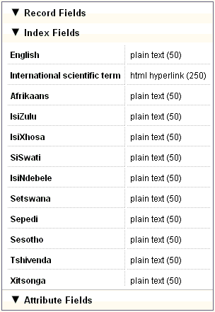
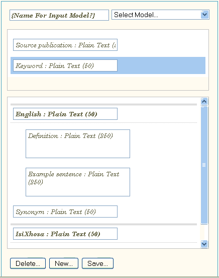

|
Input Model Workbench
|
Previous Top Next |
A Record is created and edited using an input model, which determines all the fields that should be available in the record. The input model specifies which record fields, index fields and attribute fields should be available when creating or editing a record.
The input model also defines which fields are mandatory and implements the access control for each field. The Input Model Workbench is divided into three panels: the Fields Palette, the Assembly Area and the Properties Panel. Each of these is discussed in more detail below.
Fields Palette
This panel displays all the fields available for use in an input model. The fields are ordered into groups determined by their type: record fields, index fields and attribute fields. By clicking on one of the tabs, the relevant list of fields will be displayed.

· By double-clicking on a field in the Fields Palette, the field will be inserted into the input model.
· When an index field is added to an input model, a synonym field will automatically be attached to the index field.
· By double-clicking on an attribute field, it will be added to the index field that is currently selected.
· Fields can be reordered by dragging and dropping them into the new position. However, if you move an index field the attribute fields associated with it will NOT move with it, but will remain and become associated with the index field directly above them. The same will happen if you drop an index field between another index field and its attribute fields.
Assembly Area
The Assembly Area is the window that displays the fields of the current input model.

At the top of the Assembly Area, there is a name box in which the name of a new input model can be entered. If an existing input model is selected, the name of the input model will be displayed. To the right of the name box is a drop-down list containing the names of all the existing input models. This drop-down list can be used to select an input model for editing.
You can also create a new input model by using an existing model as a template. This can be done by selecting the existing input model from the drop-down list, making the necessary changes and then changing the input model name BEFORE SAVING it.
The Record Fields area is under the name box and displays all the record fields for the current input model.
The Index Fields area is under the Record Fields area and contains all the index fields, as well as their attribute fields for the current input model. The English index field will automatically be added to a new input model, as every record must have an English term.
Click on the Delete... button to delete the selected field. Click on the New... button to clear the Assembly Area for the creation of a new input model. Any unsaved changes to the previous model will be lost. Click on the Save... button to save a new or edited input model.
Properties Panel
The Properties Panel displays the properties of the selected field.
The table below lists the properties displayed in this panel:
|
Field Name
|
The name of the selected field.
|
|
Field Type
|
The type of field.
|
|
Field Data Type
|
The type of data the selected field can contain.
|
|
Access Control
|
|
|
Maximum
Length
|
The maximum length of the field contents is shown.
|
|
Default Value
|
Assign a default value to a field. When a new record is created, this field
will already contain the default value.
|
|
Minimum
Occurrence
|
The minimum number of times this field can appear in a record. The
normal value is zero. If a field is mandatory, a value of 1 should be
entered.
|
|
Maximum
Occurrence
|
The maximum number of times this field can occur in a record.
|
Creating and using a new input model
The following steps need to be completed in order to create a new input model:
1. Insert the record fields.
2. Insert the index fields.
3. Insert the attribute fields for each of the index fields.
4. Enter a name for the new input model.
5. Save the input model by clicking on the Save button.
6. Specify the access rights for each of the fields in the input model.
7. Go to the Termbrowser.
8. Create a new record using the newly created input model.